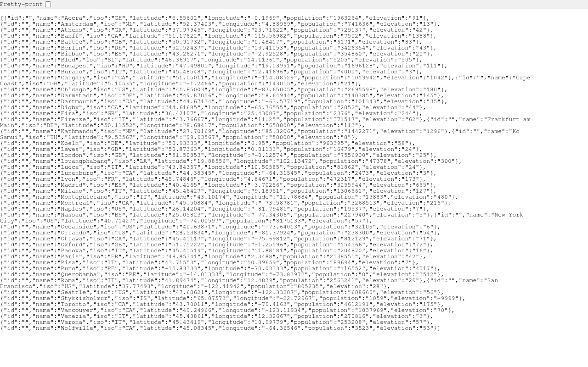
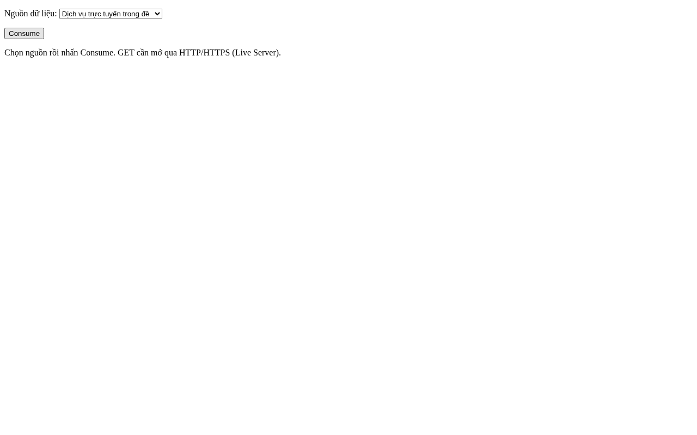
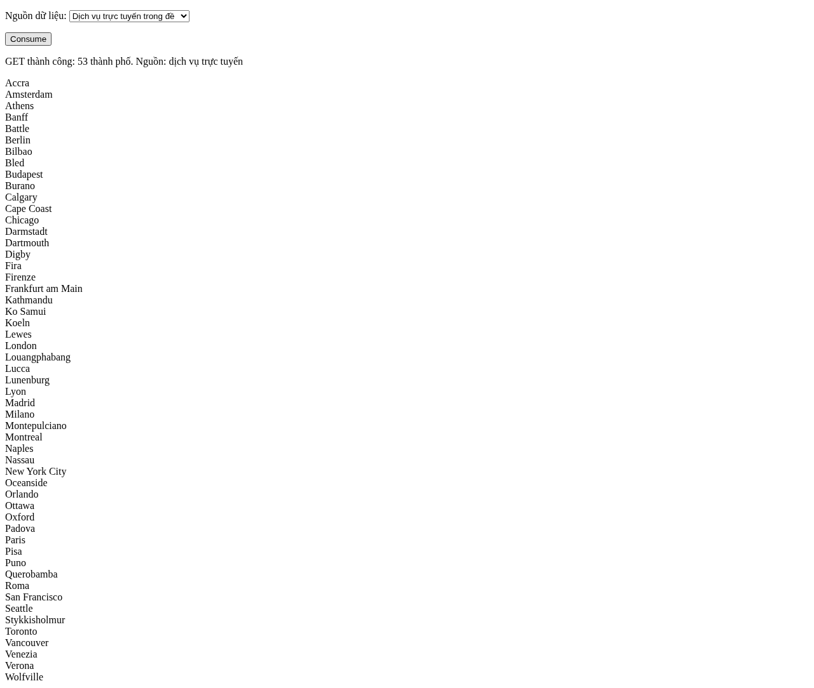
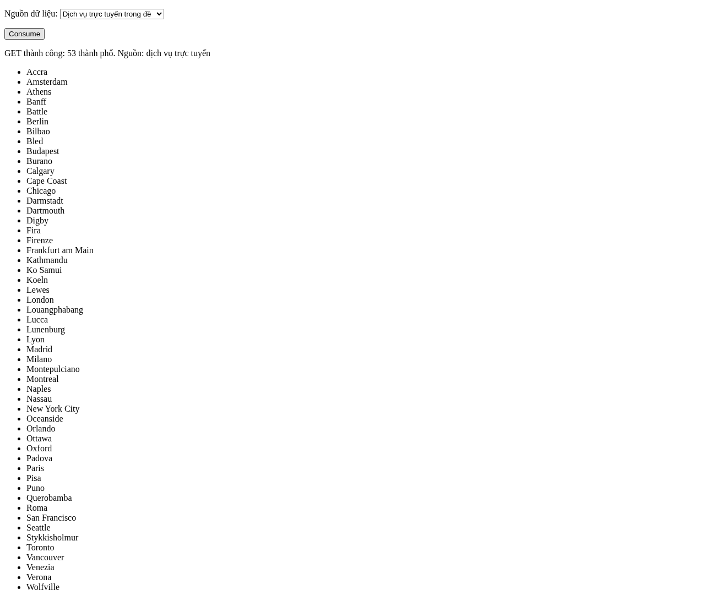
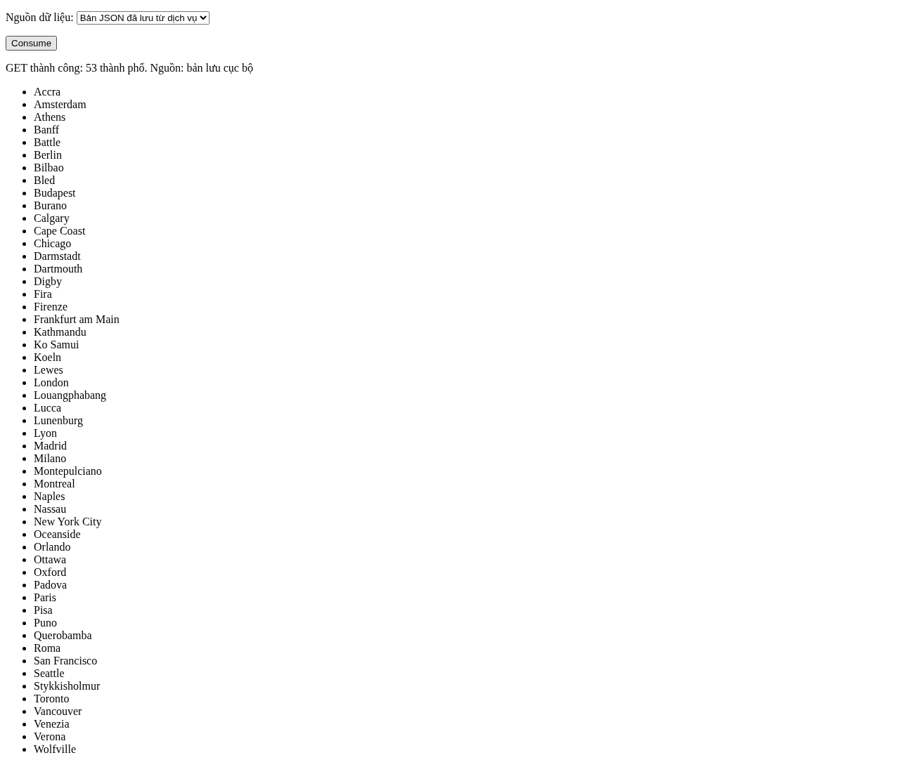

Ảnh minh chứng Exercise 10.9
Mở bài thực hành
·
Về Lab10

Bước 2: mở trực tiếp địa chỉ dịch vụ trong Chrome, nhận JSON thành phố.

Trang sẵn sàng gửi GET đến dịch vụ trong đề.

Bước 3–4: callback success duyệt bằng for và xuất tên thành phố với ngắt dòng.

GET trực tiếp dịch vụ qua HTTP thành công; $.each tạo 53 li.

GET bản JSON đã lưu từ dịch vụ: hiển thị cùng danh sách, ghi rõ nguồn cục bộ.
Thử HTTPS của cùng dịch vụ: yêu cầu thất bại do chứng chỉ hết hạn; trang hiển thị thông báo lỗi.